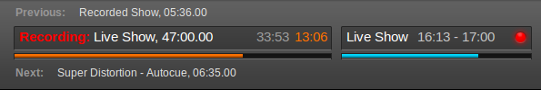
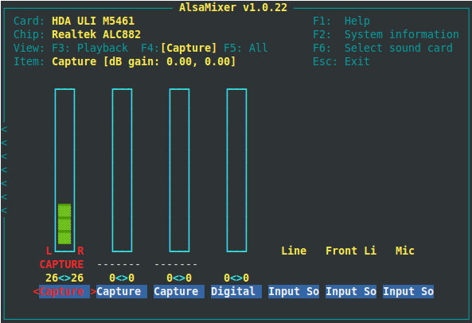
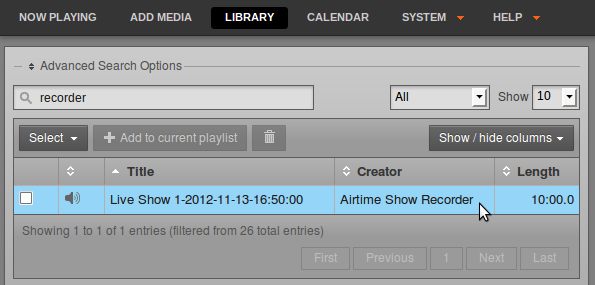
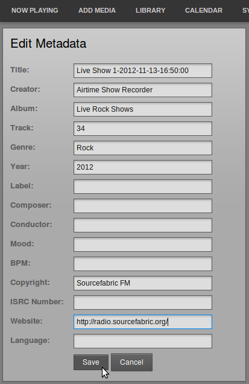
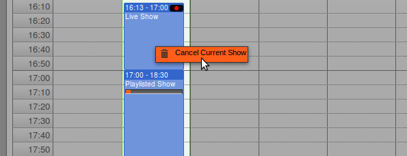
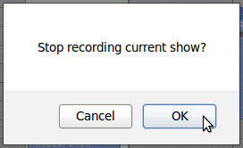

Live show recording from the input of the server's sound card, if one is fitted, can be enabled in the Add Show box of Airtime's Calendar (see the Calendar chapter for details). During a recording, a red light is shown in the Master Panel, and the word Recording appears in a red font to the left of the show name.

Before the first broadcast show scheduled for recording begins, you should check that the level of recording is sufficient to ensure a good signal to noise ratio, but not so high a level that clipping (distortion) occurs in the recorded file. You can perform this check using the command alsamixer on the Airtime server. This command opens a soundcard mixer application in the server console.

Press the F4 key on your keyboard to set capture levels. Some experimentation may be required to find the correct control on the mixer, using the Left and Right arrow keys on your keyboard. Levels are set with the Up and Down arrows, and Capture is toggled with the Space bar. Capture dB gain should be set to 0.00, 0.00 initially.
If you hear nothing at all in the recording, you may need to set the value of Input Source to Line, using the Up or Down arrows. Depending on the particular sound card and sockets you are using, you may have to enable other inputs, such as Digital or S/PDIF. If a test recording is too quiet, try raising the line output level of your broadcast mixer towards 0dB before increasing gain above 0dB on the sound card, in order to achieve the optimal gain structure.
Using recordings
After the recording has finished, you can find the recorded file in the Library, by searching for recorder. The file will be labelled with a Title containing a date and time stamp, as well as the name of the show.

Click a file and select Edit Metadata from the pop-up menu to enter additional details of the recording which will help you find it in searches later, such as Album or Language. Then click the Save button.

Cancelling a recording
If you wish to cancel the recording of a live show, click on the show in the Calendar and select Cancel Current Show from the pop-up menu.

Airtime will ask you if you are sure about this action, as it cannot be undone. The recorded show file in the Airtime library will be truncated if you click the OK button.
